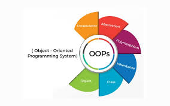

Lập trình Hướng đối tượng với Java
Khái niệm OOP trong Java
Lập trình hướng đối tượng (Object-Oriented Programming – OOP) là một phương pháp lập trình mạnh mẽ, giúp tổ chức mã nguồn theo các đối tượng trong thế giới thực. Trong Java, mọi thứ đều xoay quanh class và object, từ những ứng dụng nhỏ đến những hệ thống phức tạp hàng nghìn dòng mã.
Các nguyên lý cốt lõi của OOP bao gồm: Tính đóng gói, Tính kế thừa, Tính đa hình và Tính trừu tượng. Việc hiểu và áp dụng đúng các nguyên lý này giúp mã nguồn trở nên dễ bảo trì, tái sử dụng và mở rộng trong tương lai.
- Tính đóng gói (Encapsulation): Che giấu chi tiết bên trong đối tượng, chỉ cung cấp những gì cần thiết thông qua các phương thức công khai.
- Tính kế thừa (Inheritance): Giúp class con tái sử dụng thuộc tính và hành vi của class cha, tránh lặp lại mã.
- Tính đa hình (Polymorphism): Cho phép cùng một phương thức có thể hoạt động khác nhau tùy từng đối tượng.
- Tính trừu tượng (Abstraction): Ẩn đi những chi tiết phức tạp và chỉ giữ lại phần cần thiết cho người sử dụng.
“Java là một trong những ngôn ngữ lập trình áp dụng OOP tốt nhất, giúp phát triển ứng dụng có cấu trúc rõ ràng và dễ mở rộng. Tư duy hướng đối tượng là nền móng để trở thành lập trình viên chuyên nghiệp.”
Dương Tuấn Khang
Lập trình viên
Khi học OOP trong Java, người học sẽ được làm quen với cách định nghĩa class, tạo object, sử dụng constructor và các phương thức. Đây là nền tảng quan trọng để phát triển các ứng dụng lớn như hệ thống quản lý, phần mềm doanh nghiệp và ứng dụng web.
// Ví dụ về class trong Java
public class NhanVien {
private String ten;
private int tuoi;
public NhanVien(String ten, int tuoi) {
this.ten = ten;
this.tuoi = tuoi;
}
public void gioiThieu() {
System.out.println("Tôi tên là " + ten + ", năm nay " + tuoi + " tuổi.");
}
}
// Tạo đối tượng
public class Main {
public static void main(String[] args) {
NhanVien nv = new NhanVien("Khang", 25);
nv.gioiThieu();
}
}
Đoạn mã trên minh họa cách bạn có thể mô tả một thực thể thực tế (nhân viên) bằng code Java. Mỗi đối tượng tạo ra từ class đều có dữ liệu và hành vi riêng, thể hiện rõ đặc điểm của lập trình hướng đối tượng.
Sau khi nắm vững OOP, bạn có thể kết hợp với các framework mạnh mẽ như Spring Boot, Hibernate hoặc JavaFX để phát triển backend, web app, hoặc ứng dụng desktop chuyên nghiệp.
Khi kết hợp với công nghệ frontend như React hoặc Angular, bạn có thể trở thành một lập trình viên Fullstack Java Developer — người nắm vững cả hai mảng: logic xử lý phía server và giao diện người dùng.
Dù bạn là người mới bắt đầu hay đã có kinh nghiệm, việc hiểu sâu OOP sẽ giúp bạn viết code “sạch”, dễ hiểu và dễ bảo trì. Hãy bắt đầu bằng những ví dụ nhỏ, dần dần nâng cấp dự án và thử áp dụng các nguyên lý OOP trong mọi tình huống thực tế.
Thông tin bài viết
- Chủ đề: Lập trình Hướng đối tượng với Java
- Tác giả: Dương Tuấn Khang
- Ngày đăng: 02 Tháng 10, 2025
- Đọc thêm